AI 自我认知产品MVP · 持续迭代
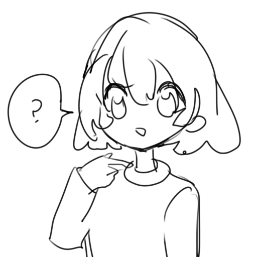
我吗 OhMee
换一种说法，
重新看见自己。
通过 AI 重写与身份认领，
让用户看见日常经历里被忽略的能力。
50+MVP 测试用户
553用户消息分析
我的工作产品设计 / AI Workflow / 全栈开发 / 用户验证
认识自己，从日常开始。OHMEE / PRODUCT SCREENS
AI PRODUCT MAKER · FROM 0 TO 1
你好，我是徐晓萌 / Angela。
我关心人是怎么想的，也喜欢把想法做出来。
用 AI，做一些和日常生活有关的产品。
从理解用户，到做出来，再到真实的反馈。
SELECTED WORK
从“为什么会这样”，
到“做出来试试看”。
AI 自我认知产品MVP · 持续迭代

换一种说法，
重新看见自己。
通过 AI 重写与身份认领，
让用户看见日常经历里被忽略的能力。
我的工作产品设计 / AI Workflow / 全栈开发 / 用户验证
认识自己，从日常开始。OHMEE / PRODUCT SCREENS
陪伴型 AI独立产品 · 开发中
一个会说真话，
也一直在的 AI 朋友。
把人设、语气和长期记忆做进陪伴体验，
探索从陌生到熟悉的持续对话。
我的工作陪伴体验 / Agent 设计 / 记忆机制 / 早期验证
个人工具，也有早期的手绘探索。
A LITTLE ABOUT ME
Angela Xu 徐晓萌
我感兴趣的是：
技术如何回应人的真实感受。
从访谈、产品设计，到 AI 架构、Vibe Coding 和数据分析，我喜欢把想法推进到可以被真实用户体验的阶段，再用反馈继续迭代。
谢菲尔德大学本科
2024 届
英语 · 商务
日语 · 日常
Codex / Claude Code
Figma / Dify
LET’S MAKE SOMETHING USEFUL.
正在寻找 AI 产品经理机会，
期待一起聊聊产品、用户和那些值得试一试的想法。
联系方式与简历待补充
通过心理学知识和市场调研，0-1开发差异化AI心理产品，全栈开发MVP并进行真实市场测试，正在优化迭代
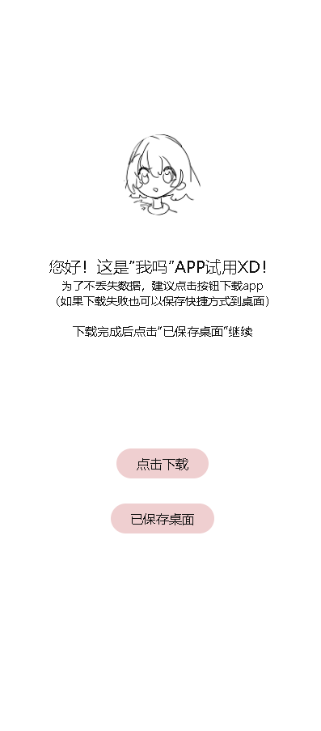
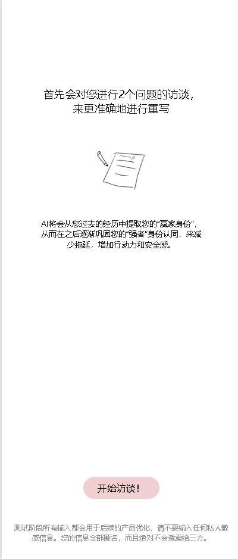
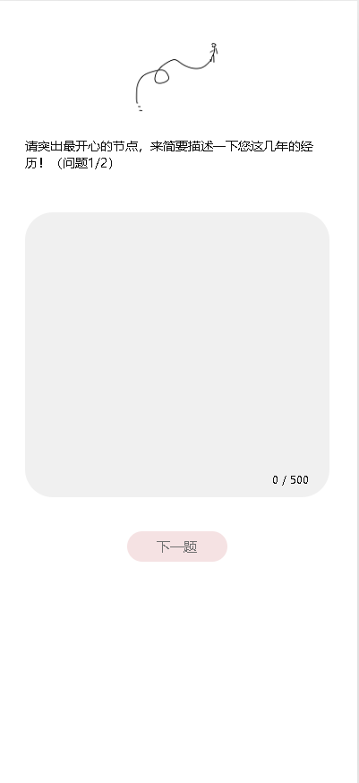
试用链接：angelapomu.space
“爱你老几”、“强者思维”和“自我主体性”等话题的反复流行，突出新一代年轻人普遍内耗、生活中缺乏正反馈、自我认知模糊的痛点。尤其是女性用户。她们习惯性忽视自己的成就，总是强调自己的失败和不足。
结合心理学相关研究，设计“让用户自己鼓励自己”的新型陪伴产品。
研究 Tolan、Mindsera、Mindcraft、Mindback 等产品，分析其目标人群、ai能力边界和商业模式。发现缺少观察到的痛点的垂类产品。
使用 Figma 与 UI 概念快速测试市场反馈，结合早期用户访谈确定 MVP 的核心定位、目标用户与功能范围。
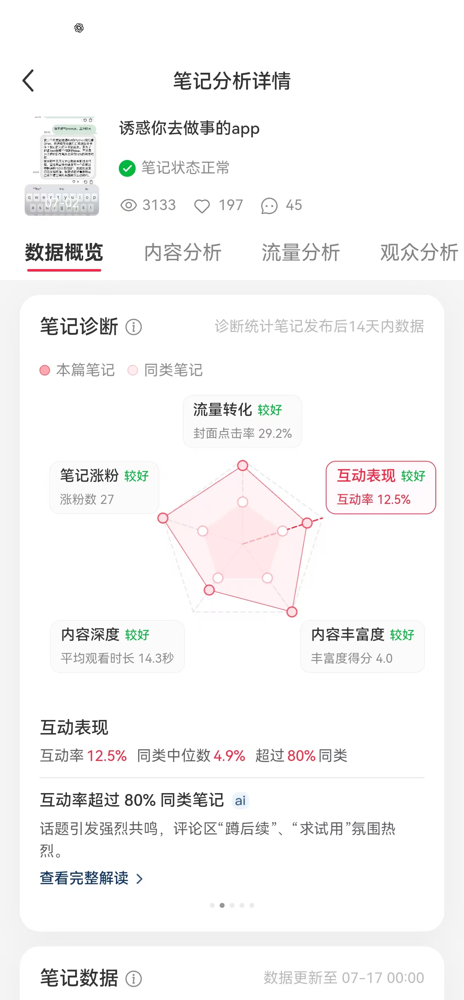
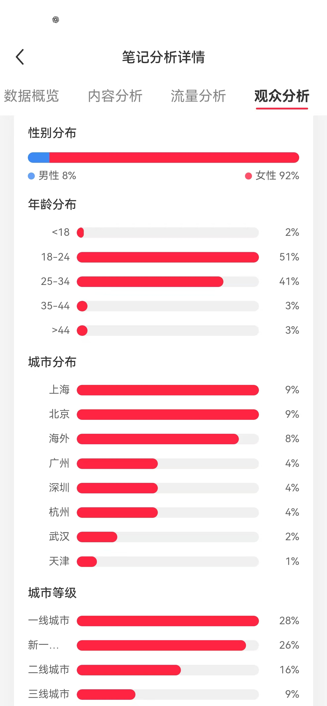
为了排除延迟带来的测试准确性，采用前后端异步数据传输；可视化数据本地储存、异步更新。实现0延迟
测试阶段会清楚告知输入会被用来迭代产品。为了降低心理摩擦，使用匿名id绑定数据库模式的pwa进行测试。
为了找到magic number，初始设定为6轮输入更新一次画像。
UIUX的设计需要能让用户感觉“自己帮助自己”，而不是跟ai bot聊天。也需要可以自由开关ai的重写功能。整体氛围需要轻松，但不像心理咨询app。整体采用低饱和色的绿色为主题色，撞色的粉色作为亮点色。
用自然的访谈——进入 App——看到 AI 重写的流程，让用户第一次无摩擦体验重写。
从用户的输入中提炼可视化身份标签等，作为留存机制设计。
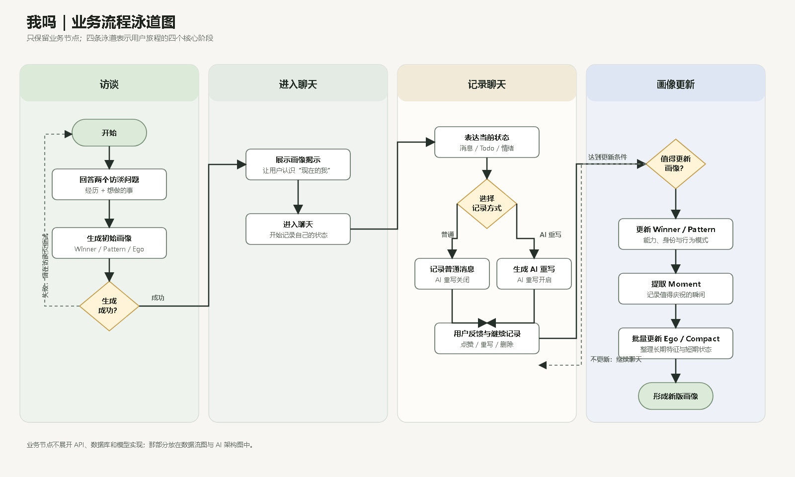
考虑到MVP最简实现，设计最大化降低提示词优化难度、回复速度和测试成本的ai workflow
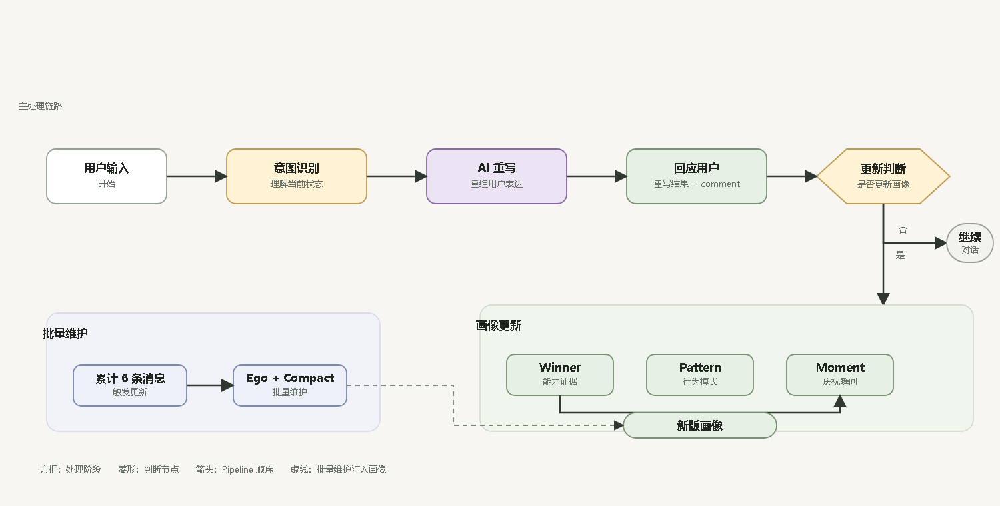
主要使用figma，结合figma make、google stitch、claude和codex确定最终UIUX
全程手动维护并对齐PRD，维护agent.md, plan和task三个文档，输出api合同、architecture文档、UI文档作为对齐，实现前后端开发。
根据workflow自行搭建多节点的提示词批量测试框架。创建测试集。横向对比5个llm最终选型gemini 3 flash和deepseek 4 flash。测试10+轮得到第一轮提示词。随着真实用户测试，筛选bad case, good case和边缘case更新测试集，优化提示词3+轮。
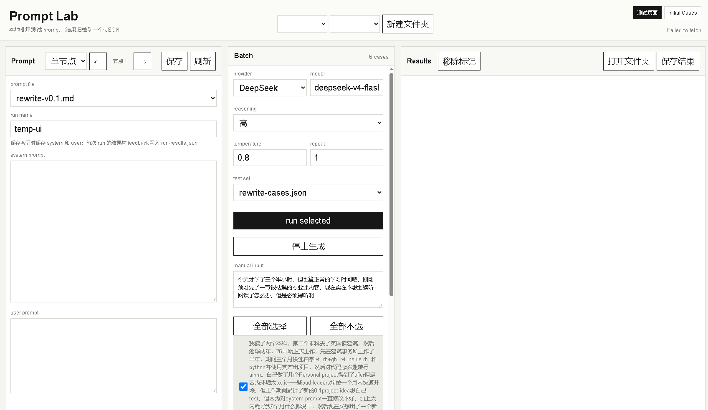
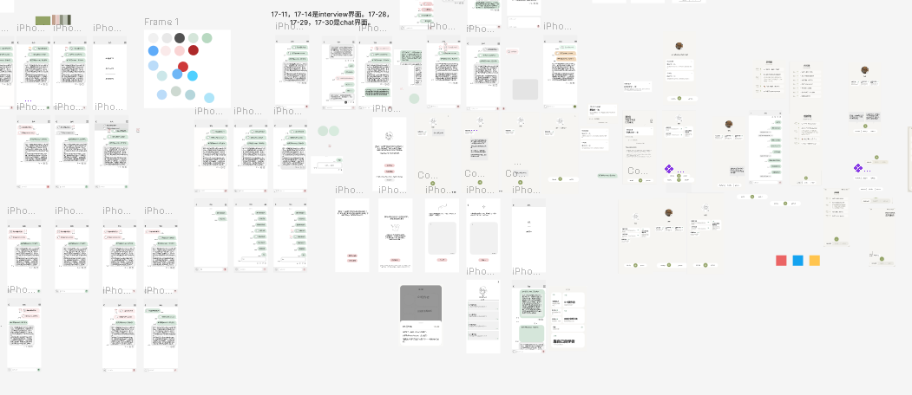
结合使用漏斗、553 条用户消息的聚类分析与深度访谈，识别产品从首次体验到持续使用的问题，并据此调整访谈、身份页面和 Prompt 机制。
结合使用漏斗与 553 条用户消息聚类分析，定位用户从首次体验到持续使用的问题，明确功能迭代方向。
通过真实用户访谈了解首次体验、身份页面和持续使用中的问题，将反馈转化为产品优化方向。
在不同用户画像中，观察到对第一人称改写及身份认领机制的积极反馈。现阶段证据支持继续迭代，下一步将集中验证 Rewrite 质量、重复使用和长期留存。
从价值假设到 LLM Workflow、数据结构、Prompt Evaluation 与用户验证，将抽象判断落实为可持续迭代的系统。
一个把截图、OCR 原句和生词卡关联起来的个人词汇工具。十格容量和倒计时让收集回到处理，而不是无限囤积。
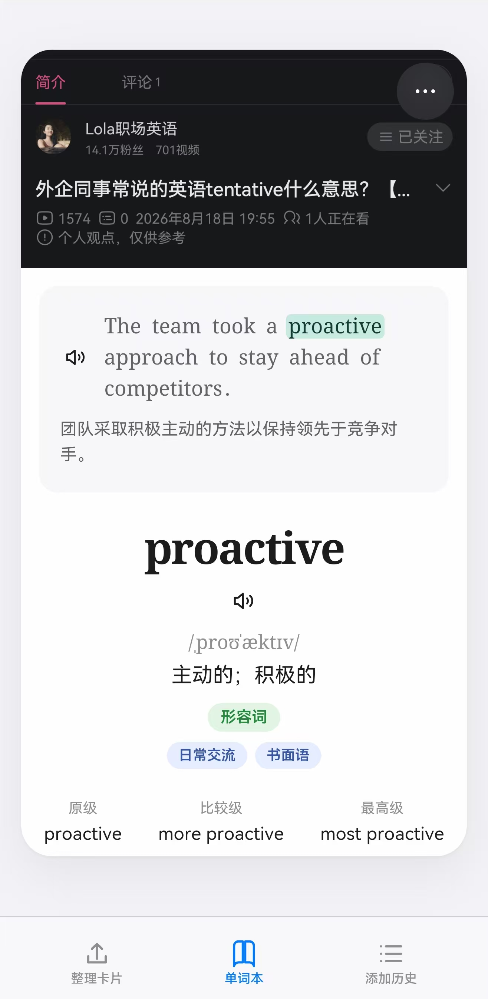
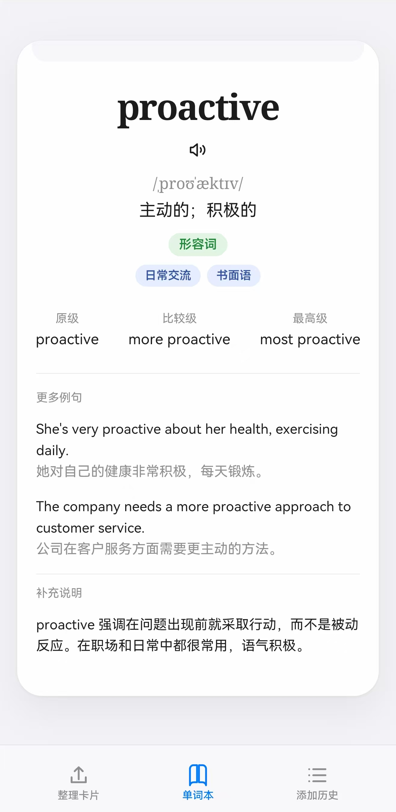
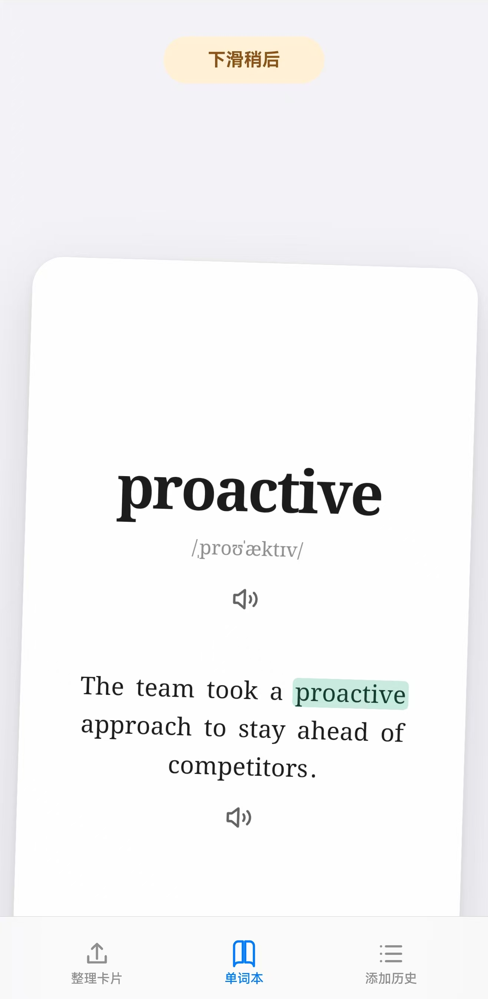
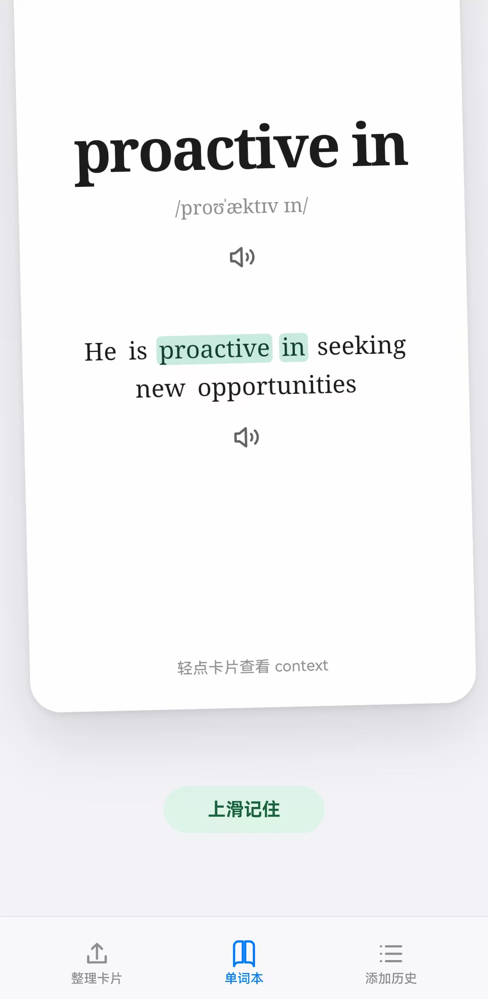
总是遇到只懂一半的英文单词。离开原句查词，得到的是词典定义，却丢掉了当时的语境；同一个词的不同意思也容易混在一起。
Contextual Collector 因此把单词和它所在的原始句子一起收集，让复习能回到真实阅读场景。
围绕用户实际遇到单词时的原句设计收集和复习体验。
调研潜在用户后，确认需求存在但受众小众，因此保留为自用工具，没有商业化。
截图将单词与 OCR 识别出的原句一起放进悬浮气泡。复习时通过词卡浏览，把词重新放回当时的阅读语境。
词库只有十个格子。倒计时促使用户处理已有词条后再补充；容量有限是产品的主动设计，让稀缺帮助用户完成复习。
最多十个待处理词条，避免收集变成无限堆积。
用时间压力提示处理已有内容，再继续收集。
单词不脱离它出现时的句子，用户可以回忆原来的阅读上下文。
复习以连续浏览词卡的方式进行，让查词和回顾形成轻量闭环。
真实句子帮助用户分辨同义词和多义词，补上单独词典释义缺少的语境信息。
用户调研确认这是小众需求，因此产品定位为个人工具。它的核心价值是将生词、原句和复习放在同一个轻量流程里。
语境是记忆的一部分，有限容量则让复习有机会真正发生。
一款围绕闺蜜人设设计的陪伴型聊天机器人。不要求用户记卡路里，通过三阶段语气和关系熟悉度，提供持续、直接的陪伴。
很多减肥 App 把重点放在记录卡路里，用户很快就会放弃。产品观察发现，人们需要的可能不是更多数字，而是一个会说真话、又持续在场的朋友。
减肥搭子以闺蜜关系作为产品入口，用陪伴和逐步建立的熟悉感承接用户的日常状态。
早期内容发布后，单条帖子获得 300 次曝光，20 多人表达兴趣，9 人加入社群。这些信号用于观察用户是否愿意继续了解产品。
单条帖子曝光约 300，初步触达对减肥陪伴有兴趣的人。
20+ 人表达兴趣，9 人加入社群，形成早期用户沟通入口。
闺蜜人设一次性生成，避免每次对话都重新定义角色。随着对用户的了解增加，聊天语气从试探、直接逐步走向犀利。
闺蜜人设一次性生成，保证陪伴关系有连续性。
项目选择 Sonnet。测试中，DeepSeek 在中文情感场景里的表达被评价为“太爹味”，不符合预期的朋友语气。
计划采用 ToB affiliate 分成，用户不付费。每位用户的模型成本约 ¥70/月，按现有估算，两笔转化可以覆盖成本。
不向用户收费，保留轻量的陪伴体验。
通过 affiliate 分成覆盖模型调用成本。
两位测试用户在机器人随口说了一句话之后，就表达了购买意愿。这是早期的体验信号，说明角色语气可能影响用户对产品价值的感知。
当前处于开发阶段，早期内容互动、社群加入和测试反馈为后续产品验证提供了线索。
shelter 是一个围绕专注空间的早期探索。以手绘帐篷和篝火为起点，尝试用画面与声音营造暂时远离外界干扰的氛围。
早期手绘探索 / 氛围与体验